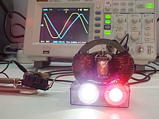

Click here for the ENGLISH VERSION 
16 février 2013 - DLE-TEST03 : J'ai récemment découvert sur l'internet le transformateur Bi-Toroïd ou BiTT inventé et breveté par Thane C. Heins. Ce type de transformateur est très intéressant à étudier car il offre une caractéristique très particulière de l'Effet Lenz Retardé que j'ai voulu tester et vérifier par moi-même. Lorsque des charges sont connectées aux secondaires de ce transformateur bi-toroïd (BiTT), la puissance réelle consommée à l'entrée reste inchangée, le déphasage entre la tension et le courant est invariant...
Ce transformateur BiTT de Thane C. Heins a déjà été testé et les mesures validées à l'inversité d'Ottawa au Canada et de nombreux rapports de tests et des vidéos ont été publiés.
Donc j'ai n'ai pas pu m'empêcher de reproduire ce transformateur Bi-Toroïd... Voici donc le BiTT v1.0.

Ce transformateur possède un primaire (220V/50 Hz) et deux secondaires (5V). La particularité de ce transformateur réside dans la forme de son double circuit magnétique.
Dans ce premier test du BiTT v1.0, j'ai connecté 2 LEDs de puissance (1W) en sortie d'un des 2 secondaires, l'autre étant en court-circuit. Un interrupteur à deux circuits et 2 positions permet de connecter les 2 LEDs sur le secondaire. La tension, le courant et le déphasage sont mesurés aux bornes du primaire.
Voici le détail de la configuration :

Voici les spécifications des LEDs de charges connectées en sortie :

Résultats et mesures

Lorsque le BiTT v1.0 est mis en charge, le déphasage entre la tension et le courant RESTE INCHANGE, une faible diminution du courant en charge est même observée...

Voici les mesures relevées dans cette configuration, observez le déphasage entre la tension et le courant, à vide et en charge...


Voici la vidéo des mesures effectuées sur le transformateur Bi-Toroïd BiTT v1.0 de Thane C. Heins
Voici des vidéos de Thane C. Heins à l'université d'Ottawa (Canada) qui démontrent et expliquent en détail l'effet observé
BI TOROID TRANSFORMER vs CONVENTIONAL TRANSFORMER by Thane C. Heins
MIT Dr Zahn Bi Toroid Transformer Tutorial
Stay tuned,
Email: jnaudin509@aol.com
Documents et références :